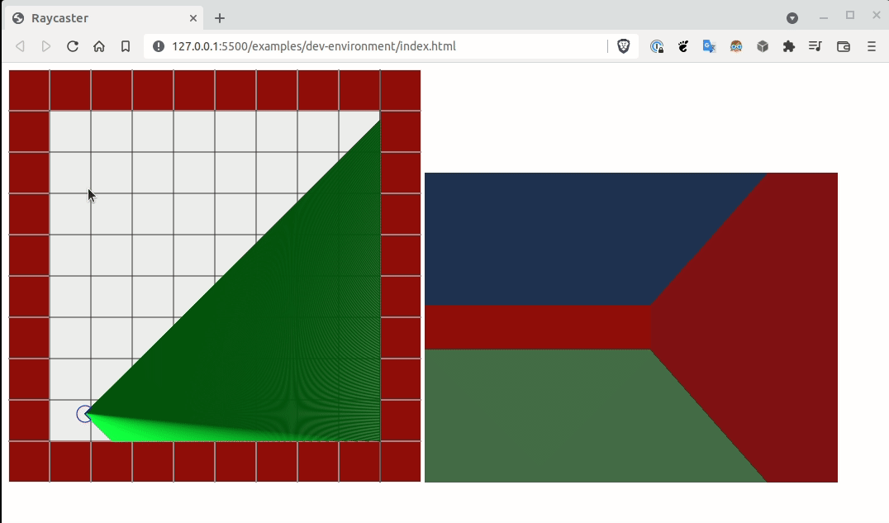

Wolfeinstein 3D est un jeu vidéo sortit en 1992 par la société 3D Realms et sur lequel ont travaillés John Romero et John Carmack (-> juste le père de presque toute la 3D actuelle dans l'industrie du jeux vidéo, c'est un trés bon développeur)
A cette époque, les meilleures machines pour jouer avaient des CPU 32 bits cadencés au mieux à 40MHz, avec 200 Mo de disque dur et 4 Mo de RAM. On parle d'un temps ou les cartes graphiques accélérées (c'est à dire avec un GPU puissant sur la 3D) n'existaient pas et quand vous dépensiez de l'argent sur votre machine, c'était pour acheter une "carte son" qui vous permettait d'entendre des bruitages normaux plutot que les seuls BIPs dont étaient capables les PCs de l'époque.
Et ces spécifications étaient encore un peu limite pour faire un rendu 3D temps réel, même simple, comme on les connaitra ensuite. Pourtant Wolfeinstein 3D était un jeu 3D temps réel qui a bluffé tout le monde à l'époque.
Alors comment Romero et Carmack ont ils fait?
Et bien en fait, ils n'ont pas réellement programmé un rendu 3D temps réel au sens où tout le monde l'entend. A la place, ils ont programmé une approximation de rendu 3D (qu'on a surnomé plus tard de la "2,5D") Leur moteur adaptait une technique de "Ray casting" pour imiter, sous certaines contraintes, un rendu 3D.
Programmer "from scratch" en typescript, comme un grand, sans librairies tierces ni aide d'aucune sorte au runtime, un moteur équivalent fonctionnant dans un navigateur récent et pouvant tourner à au moins 30 fps (mais idéalement + de 60fps)
Il est demandé à ce moteur de simplement savoir afficher un sol, un plafond et des murs unis, sans textures.
Pour ce faire, au préalable, nous développerons aussi une vue 2D de la carte dans lequel notre point de vue 3D évoluera. Dans cette vue 2D, nous pourrons ajouter et retirer des murs.
Faire un clone du jeu Among Us, affiché en mode Wolfeinstein 3D
De temps en temps pour mettre a jour les deps et la première fois après le clonage du dépot:
npm install
Pour lancer le serveur:
clear && npm run start:dev
Par défaut le serveur web écoute sur http://127.0.0.1:3000/
Generated using TypeDoc